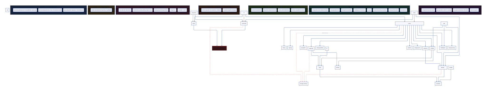
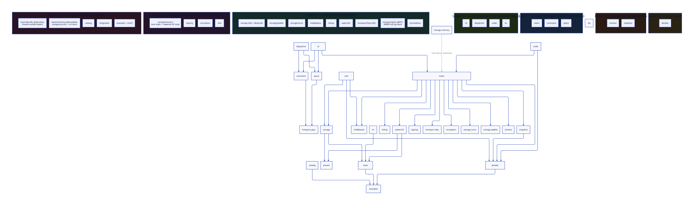

check-layers enforces layering; test-only deps excluded from
counts.
Architecture Review · 2026-06-24
Modularity, Coupling & Composability
A 43-module CQRS/ES Go library with a clean layered DAG, strong interface segregation, and a library-not-framework ethos. Two structural smells keep it from excellent: a test-dependency leak from core modules and one orphaned transport module.
00Summary
43
Modules (go.mod)
6
Clean layers (DAG)
8.4
Modularity /10
2
Structural smells
4
Core→test-impl leaks
1
Orphan module
The architecture is genuinely strong: interface-segregated stores (Sink/Source),
concrete-type hot paths, composition over inheritance throughout, and a disciplined
multi-module workspace with per-module go.mod. The DAG is acyclic at the
compiled-import level. The issues found are coupling hygiene, not design flaws.
01Dimension Scores
| Dimension | Score | Verdict |
|---|---|---|
| Modularity (module boundaries) | 9 / 10 | Excellent |
| Coupling (downward-only deps) | 7 / 10 | Good, leak to fix |
| Composability (pipe-like composition) | 9 / 10 | Excellent |
| Service orientation (mechanism ≠ policy) | 9 / 10 | Excellent |
| Scalability (independent versioning/build) | 8 / 10 | Strong |
| Internal hygiene (orphan/dead config) | 6 / 10 | Needs cleanup |
02Current Architecture
Solid arrows are production imports; red dashed arrows are
test-only imports that appear as direct require in core
module go.mod files (the leak). The red node is the orphaned transport/grpc.

03Coupling Hotspots
Coupling smell
Test-dependency leak: core → storage/memory
event/go.mod, command/go.mod, decider/go.mod, watermill/go.mod
Four modules declare storage/memory as a
direct production require, but import it only from
_test.go. Because storage/memory itself depends on
command/event, the require graph contains a cycle
(event → storage/memory → command → event) that resolves only because the
real import graph is acyclic. The leaf event module (advertised as 3-dep
minimal) drags a Layer-4 test implementation into its module graph.
Fix Replace the test usage of
storage/memory with
in-package fakes, or route through the existing event/eventtest doubles.
The modules already provide FakeStore/FakeBus. After the
switch, go mod tidy drops the require and the cycle disappears.
Workspace hygiene
transport/grpc is workspace-isolated by a genproto conflict
transport/grpc (absent from go.work and flake testModules)
The gRPC adapter builds cleanly in isolation (GOWORK=off) but is
deliberately kept out of go.work: adding it merges a transitive
google.golang.org/genproto (monolithic) requirement against
genproto/googleapis/rpc (split, required by grpc v1.81.1), producing an
ambiguous import on googleapis/rpc/status. So root
go test ./.../lint never exercise it — a real coverage gap, but the
exclusion has a cause, not an oversight.
Fix Align the workspace on the split
genproto/googleapis/{rpc,status} modules (drop the monolithic
genproto via go mod tidy + a coordinated bump), then add
transport/grpc to go.work + flake.nix
testModules. Until then, test it with
cd transport/grpc && GOWORK=off go test ./....
04Composability (what's working)
Interface Segregation Principle, applied well
Every store is split into role interfaces: Store = EventSink + EventSource,
plus Journal, SeekableJournal, BackwardsSource,
StreamingSource. Consumers depend on the narrowest interface they need —
the hallmark of Unix-pipe composability.
Concrete types on hot paths, interfaces at seams
event.Event = *ImmutableEvent (a concrete alias) removes type-assertion
overhead internally, while the store/bus behaviors stay interfaces. This is the
correct tradeoff: interfaces for DI, concrete types for the value that flows everywhere.
Mechanism vs. policy is clean
Core modules define what (interfaces, taxonomy, branded IDs); adapters define how (SQL, Pebble, Turso, Watermill, gRPC, SSE). No core module knows about a specific database or transport.
Bundle presets compose without forcing
stack/{memory,sqlite,pebble,postgres,turso} wire sensible defaults, but
consumers can still import event alone with 3 deps. Composition is offered,
never mandated.
05Service Orientation
The library follows the "do one thing well" Unix principle at the module level. Each
module is independently versionable, independently buildable (GOWORK=off go build ./...), and independently importable. The only friction to full service-orientation is the
require-graph cycle above; once removed, every module is a clean, isolated unit a consumer
can pin and compose.
06Action Roadmap
1
Kill the test-dep leak (highest leverage)
Swap storage/memory imports in
event/command/decider/watermill
tests for eventtest fakes or in-package stubs.
go mod tidy each. Verify the require-graph is cycle-free with
go mod graph.
2
Resolve the genproto conflict, then wire transport/grpc
Align the workspace on split genproto/googleapis/{rpc,status} (drop the
monolithic genproto). Only then add transport/grpc to
go.work + flake.nix so root CI covers it. Until then it's
tested via GOWORK=off.
3
Extract the multidb helper
Pull openEventStores/openQueryStores into
stack/ to remove the sqlite/postgres clone (see deduplicate-code report).
4
Fix the file-size gate for generated code
Exclude *.pb.go so the 350-line gate stops false-flagging generated
protobuf.
07Target (Ideal) Architecture
After the roadmap: core modules carry zero infra deps, test doubles point down only,
transport/grpc is a first-class workspace member, and the
stack module owns the shared multidb wiring.

Strengths to Preserve
+
Per-module go.mod with dependency budgets
+
ISP-split interfaces everywhereSink/Source/Journal/Seekable — consumers take only what they use.
+
Library, not frameworkNo transport/broker/driver forced; presets are opt-in.
+
Acyclic compiled import graphThe DAG holds; only the require graph has a cosmetic cycle.